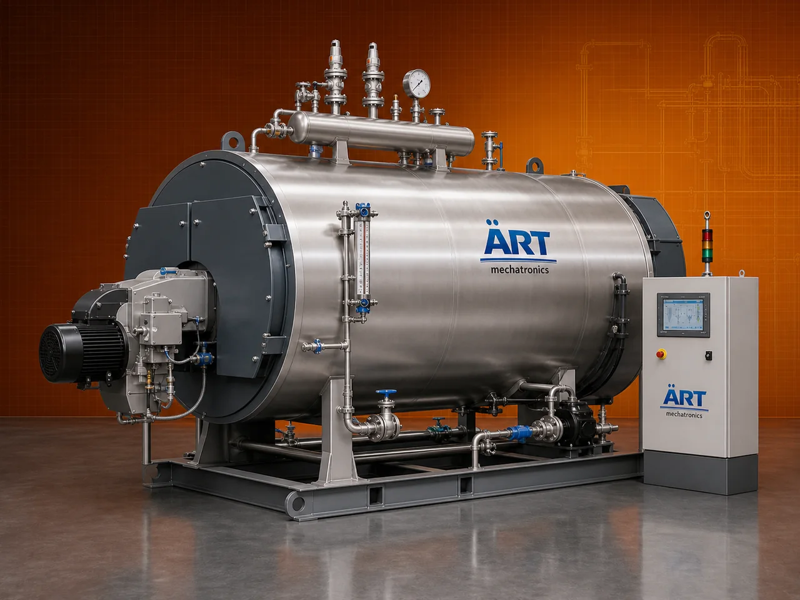

Boiler Machine (Industrial Steam Boiler & Process Heating System)
A Boiler Machine, also known as an Industrial Steam Boiler or Steam Generation System, is a critical industrial equipment used for producing steam or hot water by heating water using fuel or electrical energy.

About the Boiler Machine
Boilers are widely used across industries such as food processing, pharmaceuticals, chemicals, textiles, power plants, packaging, and manufacturing, where steam is required for heating, drying, sterilization, cooking, and processing operations.
Industrial boilers provide efficient heat transfer, controlled temperature, and reliable steam supply, making them essential for continuous industrial production.
ART Mechatronics offers high-performance boiler systems, engineered for maximum efficiency, safety, and long-term industrial reliability.
One machine, many names
Buyers search for this equipment under many terms — we manufacture all of them:
Working Principle of Boiler Machine
Types of Boiler Machines
Industries Using Boiler Machine
🍃 Food & Agro Industry
- Cooking, drying
💊 Pharmaceutical Industry
- Sterilization
- Processing
⚗️ Chemical Industry
- Heating processes
🧵 Textile Industry
- Fabric processing
🏗️ Manufacturing Industry
- Process heating
⚡ Power Plants
- Steam generation
Features & Advantages
✔ High steam generation efficiency ✔ Reliable and continuous operation ✔ Suitable for multiple industries ✔ Fuel flexibility (diesel, gas, biomass, etc.) ✔ Safe and controlled operation ✔ Energy-efficient design ✔ Low maintenance requirement
Technical Highlights
- Capacity: Custom (kg/hr to tons/hr steam)
- Pressure: Low / Medium / High pressure
- Fuel Type: Diesel / Gas / Coal / Biomass / Electric
- Construction: Heavy-duty steel
- Control System: Manual / PLC-based
- Safety Features: Pressure valves, sensors
Turnkey Boiler Solutions
ART Mechatronics offers:
- Complete boiler system design
- Fuel system integration
- Steam pipeline and distribution
- Installation & commissioning
- After-sales service & AMC
Why Choose Art Mechatronics
- Expertise in industrial heating systems
- Customized solutions for all industries
- High-performance and durable boilers
- Energy-efficient and safe designs
- Proven performance across applications
Applications
- Food Processing Plants
- Pharmaceutical Units
- Chemical Processing Plants
- Textile Units
- Manufacturing Industries
Industries that use the Boiler Machine
Related Heating & Drying machines
Get pricing & specs for the Boiler Machine
Share the product, target capacity, current process and plant location. These details help our engineers discuss the right machine or line configuration.
One partner, from design to start-up
ART Mechatronics designs, manufactures, installs and commissions your Boiler Machine solution with regional presence in India, UAE and Thailand.